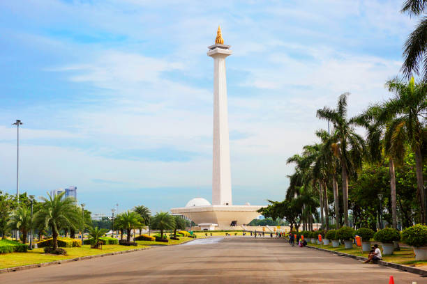
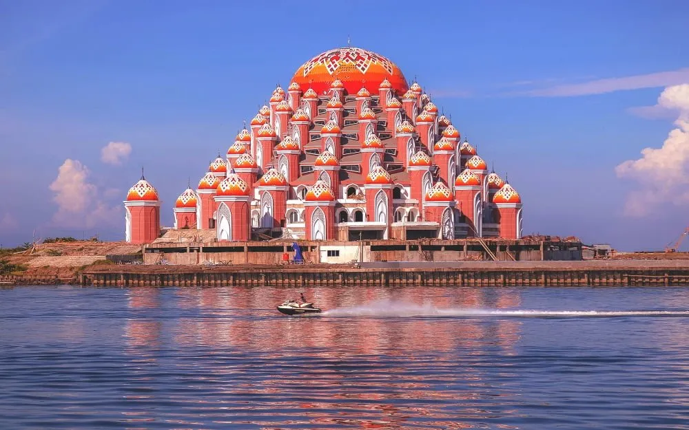

Tourist Destination

JAKARTA
Jakarta adalah ibu kota yang sibuk dan dinamis dengan kehidupan metropolitan yang penuh warna serta keberagaman budaya yang khas.

MAKASSAR
Makassar adalah kota yang eksotis dengan kekayaan budaya, sejarah, dan keindahan alam yang memikat.
NUSA TENGGARA TIMUR
NTT adalah provinsi yang menawan dengan pulau-pulau yang indah, budaya yang kaya, dan keanekaragaman hayati yang luar biasa.
PAPUA
Papua adalah wilayah yang menakjubkan dengan keindahan alam yang memukau, budaya yang unik, dan keanekaragaman hayati yang kaya.